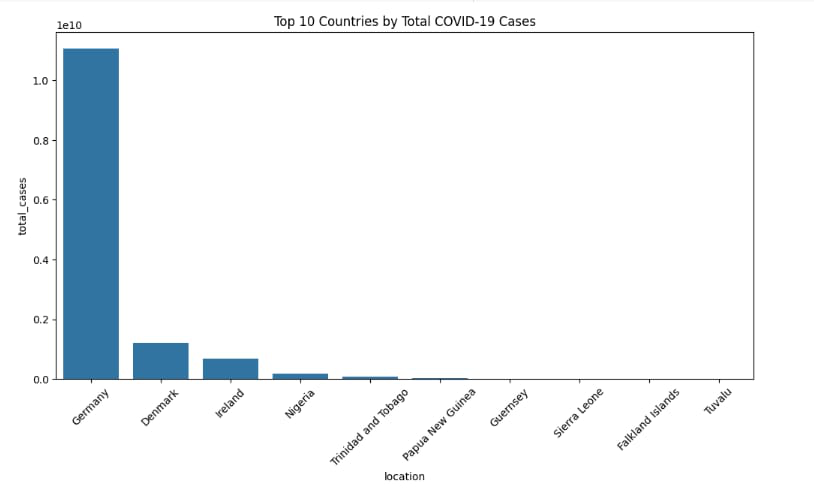
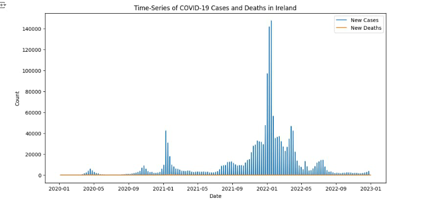

World Map Chart
# World Map Chart

This map shows the cumulative cases of COVID-19 per million population across the countries of the world. It employs an opacity scale and that the darker hues of red are used for higher numbers of cases per million. This is on the background of sections like Europe where nations including Germany indicate high numbers
Bar Chart
# Bar Chart
This bar chart shows the leading countries with total cases of COVID-19. Germany accepts the highest percentage followed by Denmark and Ireland. The chart has scale permanently set to log as there are values that range between one hundred and several millions meaning the mortality differences between these countries is emphasized.
Scatterplot with Linear Regression Line
# Scatterplot with Linear Regression Line
 This is a scatter plot that has been created using two variables, namely total COVID-19 cases and total deaths. A straight blue line is drawn through the points, and it slopes steeply upwards, meaning a positive relationship. The x-axis is number of case until ten to the power of ten and the y-axis is death till eight. 7x10^7. A light coloured shading is drawn from the regression line.
This is a scatter plot that has been created using two variables, namely total COVID-19 cases and total deaths. A straight blue line is drawn through the points, and it slopes steeply upwards, meaning a positive relationship. The x-axis is number of case until ten to the power of ten and the y-axis is death till eight. 7x10^7. A light coloured shading is drawn from the regression line.
Time-Series Chart
# Time-Series Chart for Ireland

This time series graph represents the new case and death rate of COVID-19 in Ireland from March 2020 to March 2023. A similar observation can be made for compounds that have highly variable instances with the number of new cases depicted to increase at some point especially, around January 2022, while new deaths remain comparatively small throughout the duration. Along the horizontal axis it is presented ‘date’ whereas, along the vertical axis it is presented ‘count of cases or death’.
Conclusion
This analysis provides insights into the COVID-19 pandemic response in Ireland compared to other countries.